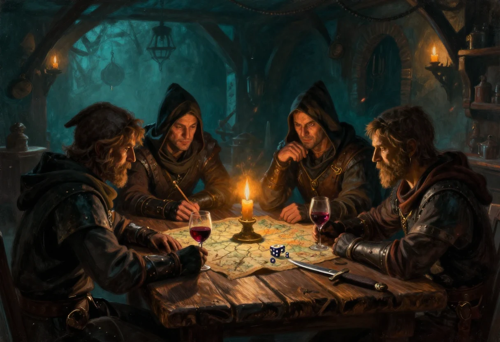

En 2000, la mailing list de Nightprowler servait de salle de classe autant que de cour de récréation. On y posait des questions de règle, on y refaisait le monde, on y réglait des comptes à propos du réalisme et de l'expérience par niveaux. J'y ai répondu souvent, parfois longuement. Ces réponses sont restées dans les archives de la page « Aides de jeu », et j'en reprends ici l'essentiel, remis en ordre. Les questions des correspondants y sont résumées, mes réponses sont reprises et allégées des abréviations de l'époque.
La question, en substance : le système d'expérience par niveaux ne rend pas le jeu réaliste, et cela gêne la table.
Je peux dire qu'avec le groupe de joueurs avec lequel je tourne actuellement, ils ont une bonne vingtaine de séances de six à sept heures en moyenne derrière eux, et le système d'expérience à niveaux ne les emballe pas trop, faute grave de réalisme. Mais toute évolution des règles doit être progressive au fil des parties. Au début, ils me faisaient la même remarque : il ne faut pas introduire toutes les options de réalisme dès le départ, mais plutôt les amener progressivement.
La question, en substance : un jour ou l'autre, les joueurs voudront aller à Bejofa, et là, pour la description, c'est mal barré.
Comme pour toutes les autres villes non décrites, sans compter le monde souterrain des gouris et autres reclus de la société umélorienne, c'est à nous de nous préparer des plans, d'abord grossiers, puis un peu plus fouillés à chaque partie. Comme dit, il serait bien que quelqu'un se décide à faire un tel plan sur support informatique et à le mettre en ligne, ce que je peux faire pour la mise en ligne. Si personne ne s'y met, il faudra attendre au moins un an ou deux.
Mais moi, personnellement, j'arrive sur la fin de mes études, années privilégiées pour le jeu de rôle, et c'est maintenant que j'en ai besoin, tout comme toi et pas mal d'entre vous, je pense, car vous êtes étudiants en grande majorité, non ? Ce sera au premier qui proposera un plan de l'imposer aux autres, après quelques modifications suivant les avis réunis si nécessaire. Il faudrait éviter que de trop nombreuses cartes voient le jour en même temps : vous imaginez des atlas et des plans qui se contredisent.
La question, en substance : faut-il prévoir des scénarios légers pour démarrer une campagne ?
Oh que oui. À réserver aux scénarios d'introduction ou aux scénarios de bouche-trou. En général, ce sont des sous-sous-parties de plus grands scénarios, un minimum dignes de ce nom.
La question, en substance : ce genre de scénario doit être ennuyeux. Ceux des suppléments mettent toujours les joueurs dans des histoires incroyables, à croire qu'ils ne peuvent pas faire un vol sans tomber sur un truc vraiment louche, genre démoniste et compagnie. Existe-t-il des scénarios de base où l'on va voler des gens normaux sans que cela débouche sur des implications incroyables ?
Le vol est ce que les joueurs pratiquent le plus souvent, tout en connaissant le danger omniprésent. Il y a donc une forte probabilité pour que la situation s'envenime dans ces moments privilégiés-là, non ? Hormis ce point de vue statistique, j'ai écrit, il y a plus de deux semaines, un mail sur les différents motifs de scénarios, c'est-à-dire les causes qui poussent les joueurs à s'impliquer dans des affaires s'avérant souvent bien compliquées et dangereuses. Si elles ne l'étaient pas, elles ne feraient de toute manière pas l'objet d'un scénario. Inspirez-vous en.
La question, en substance : Nightprowler n'est-il pas un jeu lassant à la longue, et quels sont vos trucs pour qu'il ne le devienne pas ?
Argh. Ce coup que tu me portes. Nightprowler n'est en rien un jeu lassant, et en particulier dans trois cas.
D'abord si tu gardes toujours les mêmes groupes de joueurs au cours d'aventures qui se succèdent et surtout qui s'emboîtent, suivant un cheminement le moins discontinu possible. Ensuite parce que toi, meneur, tu acquiers de l'expérience, ce qui se traduit par l'emploi sans cesse plus fluide de règles sans cesse plus réalistes, sans compter les plans et les créations de personnages que tu feras et qui pourront te resservir plus tard à de multiples occasions. Enfin parce que les joueurs en apprennent de plus en plus sur ce monde que tu développes au fur et à mesure, d'après les règles de base et les extensions publiées : ils se tissent une véritable toile de relations commerciales, d'information, d'inimité et d'amitié, sans compter la multiplicité et la diversité croissantes des choix et des déroulements de scénarios auxquels ils pourront penser ou se référer, forts de leur expérience passée dans ce monde. Cela compte non seulement les personnages rencontrés, mais aussi les bonnes planques, les tavernes, les lieux d'exutoire, les relations entre guildes, groupes et clans, qui constituent d'ailleurs une bonne part de la qualité de jeu de Nightprowler, caractérisé par des intrigues mêlant en même temps les intérêts plus ou moins liés de quantités de groupuscules des plus divers.
Une des particularités du jeu est justement la possibilité de créer des intrigues complexes donnant sur des scénarios bien moins linéaires que dans la plupart des autres jeux de rôle.
Tant qu'à parler de ce qui le rend si attrayant : il y en a marre des héros et des personnages surpuissants, grands mages et druides. Le réalisme est accru par la condition de vie des joueurs, qui n'est autre que la condition de vie humaine la plus modeste, voire la plus médiocre que l'on puisse rencontrer, condition imposée dès la naissance et dont il faudra bien qu'ils se sortent. Le métier de voleur est certes un métier à suspense, à émotions, à montées d'adrénaline, l'ambiance entre joueurs et surtout celle amenée par le meneur étant primordiale, mais c'est surtout un métier dangereux où l'on risque chaque jour d'y laisser sa peau. Et ça, oui, c'est excitant. Et puis il y a aussi ce côté de complicité, voire de confrérie, pour les plus vieux groupes, qui prennent toujours beaucoup de plaisir en matière de rôle constructif, souvent un tantinet plus évolué que dans des jeux classiques tels que AD&D ou Warhammer.
Bon, je sors un peu du propos initial. Tout ceci pour souligner que c'est là tout le plaisir du meneur : alimenter la fontaine perpétuelle de plaisir rôlistique en diversifiant les intrigues, les motifs de scénarios et la gestion des différentes règles, pour un degré de réalisme sans cesse accru. Résolument, non. On ne se lasse pas si facilement de Nightprowler. J'ai déjà fait faire plus d'une quarantaine de scénarios en moyenne à près de quatre groupes de joueurs différents, et quasiment tous y ont vraiment pris plaisir, et sont toujours prêts, quand l'occasion se présente, à renouveler et poursuivre leur expérience de voleurs dans ce monde dangereux et palpitant.
Vingt-cinq ans plus tard, je ne changerais pas grand-chose au fond. J'ajouterais seulement ceci : le réalisme dont je parle n'est pas une accumulation de règles, c'est une manière de refuser les raccourcis. Un vol qui réussit doit laisser une trace, un garde qui meurt doit avoir une famille, une nuit blanche doit se payer le lendemain. C'est cela qui rend le jeu lassant ou non, bien plus que le barème d'expérience.
Réponses extraites de la page « Aides de jeu » de mon site, 2000. Les questions des correspondants de la mailing list sont résumées et non reproduites ; mes réponses sont reprises, ponctuées et débarrassées des abréviations, sans ajout de fond. Le dernier paragraphe est une note de 2026.